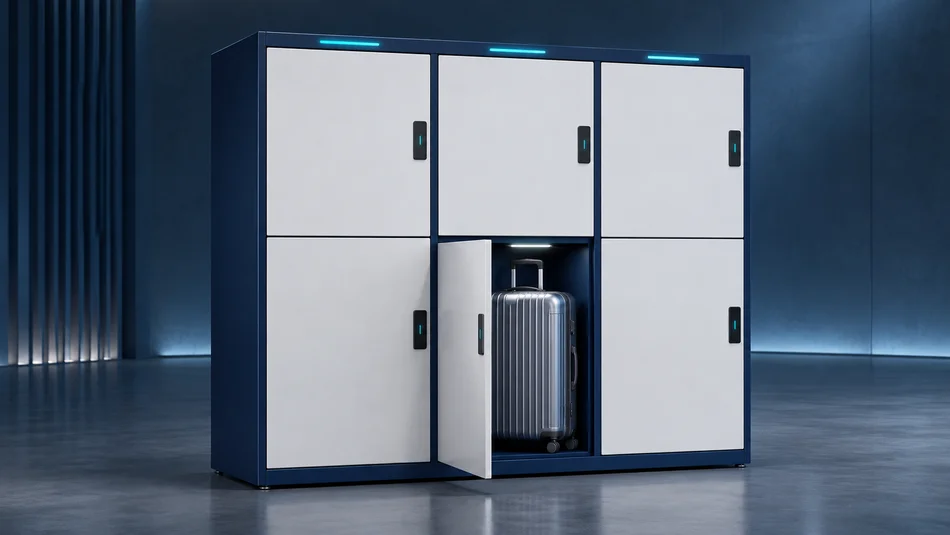
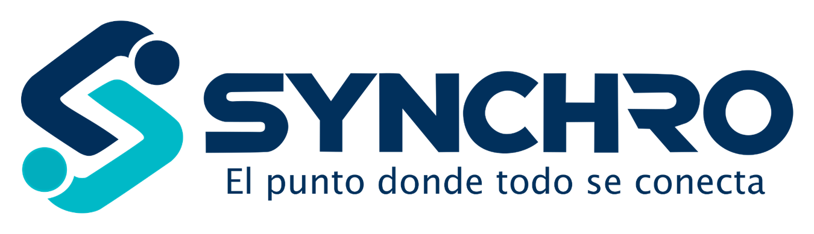
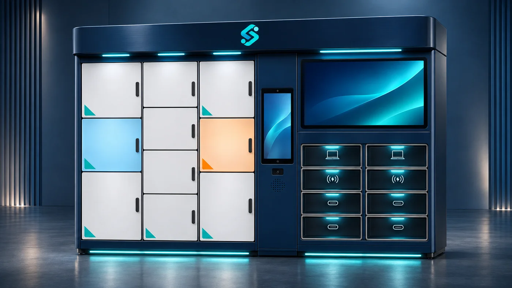
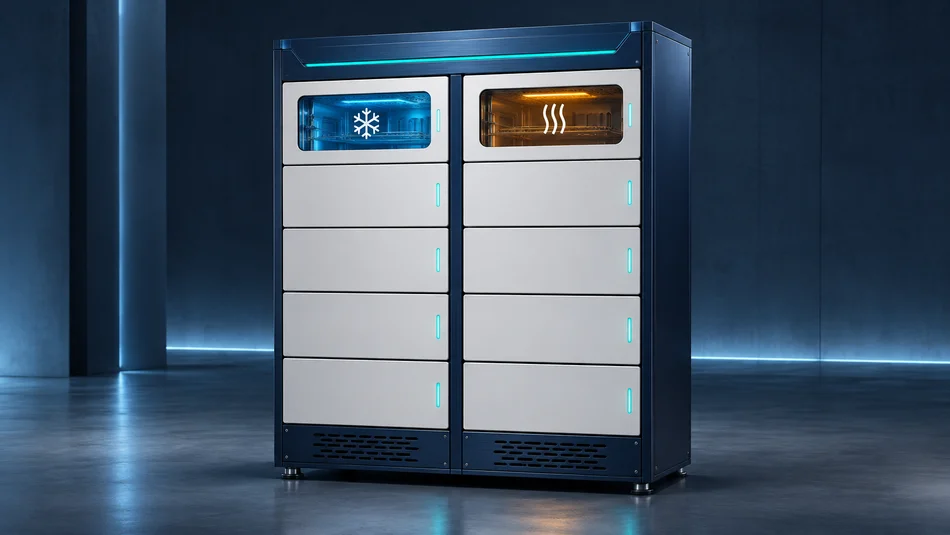
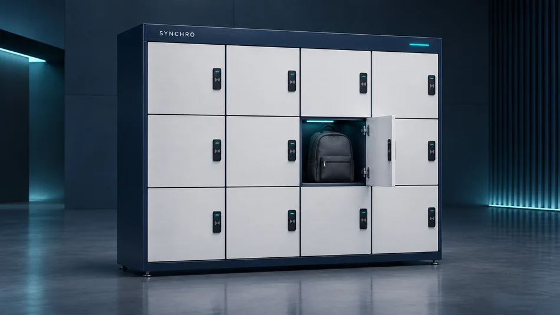
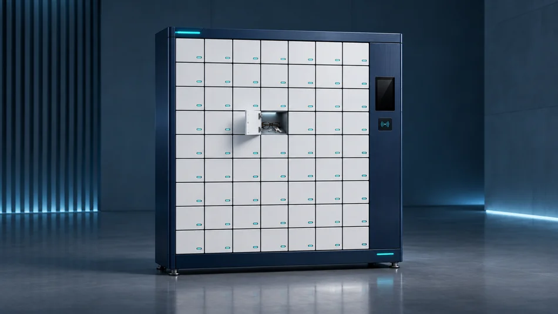

Maletas
Compartimentos amplios para maletas con ruedas, bolsos de viaje y equipaje voluminoso.
Consultar por maletas

Casilleros electrónicos modulares
Diseñamos estaciones de autoservicio para Comayagua. En un solo lugar podrás guardar tus pertenencias, cargar el celular, conservar alimentos y otros productos en frío o calor, y recibir pedidos.

Modelo de exhibición
El modelo de la feria combina compartimentos de varios tamaños, áreas de temperatura, un módulo de carga y una pantalla central.
Consultar por el modelo múltipleConfiguraciones especializadas
Explora las propuestas de módulos y cuéntanos cuál se adapta a tu espacio.

Compartimentos amplios para maletas con ruedas, bolsos de viaje y equipaje voluminoso.
Consultar por maletas
Compartimentos dedicados al resguardo de productos que requieren frío o calor.
Consultar por control de temperatura
Compartimentos medianos para mochilas, bolsos y objetos de uso diario.
Consultar por pertenencias
Compartimentos compactos para llaves, gafas, accesorios y artículos similares.
Consultar por objetos pequeñosImágenes conceptuales de las configuraciones.
Cómo funciona
Así están previstos los servicios de la estación inteligente. El sistema está en desarrollo.
Con cuenta en la web
Consulta la disponibilidad y reserva un casillero. Para productos que requieren frío o calor, el flujo contempla el pago anticipado.
En la estación · sin cuenta
Elige un compartimento disponible del tamaño que necesites para guardar tu mochila, compras o equipaje mientras haces otras actividades.
En la estación · sin cuenta
Selecciona un compartimento disponible con USB-C, Lightning o carga inalámbrica. Tu dispositivo queda resguardado durante la carga.
El proyecto · UNAH Campus Comayagua
SYNCHRO nació en 2026 en la asignatura Generación de Negocios. Somos seis estudiantes de Administración y Generación de Empresas de la UNAH, Campus Comayagua, y proponemos una red de estaciones inteligentes para la ciudad.
Quienes pasan el día fuera de casa suelen llevar la laptop, la mochila y las compras mientras buscan dónde dejarlas o dónde cargar el celular. Coordinar entregas de compras hechas por Instagram, Facebook o WhatsApp también puede implicar horarios que no coinciden y viajes adicionales.
Estas observaciones surgen de la experiencia del equipo y están pendientes de validación mediante encuestas.
Facilitar la vida cotidiana en Comayagua con servicios de almacenamiento, carga de dispositivos y gestión de pedidos que aporten comodidad, seguridad y ahorro de tiempo.
Ser una empresa reconocida en Honduras por sus estaciones inteligentes y llevar estos servicios a distintas ciudades del país.
Solicita información
Dinos qué quieres guardar, cuántos casilleros necesitas y dónde planeas instalarlos. Atendemos a empresas y particulares.